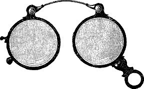

EMOTION
(ne pas voir)
" Sans émotions, il est impossible de transformer les ténèbres en lumière et l'apathie en mouvement. " Carl Gustav Jung
Pur produit de l'inconscient, les émotions font partie de nous et s’imposent à nous tout en façonnant nos relations aux autres, et ce alors même qu’elles restent souvent un mystère. Pour certaines personnes, la difficulté à les identifier et les comprendre peut avoir des répercussions sur la santé. On a souvent tendance à penser que nous comprenons, décryptons plutôt bien nos émotions. Cependant, en utilisant certains instruments de mesure (échelle alexithymie disponible en bas de page), on estime qu’entre 10 et 15 % de la population générale rencontre des difficultés majeures pour identifier et exprimer ses états émotionnels. C'est ce que l’on appelle alors l’alexithymie.
Le terme "alexithymie", dérivé du grec a (sans), lexis (mot) et thymos (humeur, émotion), signifie "absence de mots pour les émotions". Il a été introduit dans les années 1970 par le psychiatre Peter Sifneos. Il désigne un ensemble de difficultés à identifier, décrire et traiter ses propres émotions. Malgré sa fréquence, cette particularité reste méconnue du grand public, bien qu’elle puisse impacter négativement la santé mentale, les relations interpersonnelles et de façon plus générale, la qualité de vie des personnes concernées. Cette caractéristique qu'est l’alexithymie n’est considérée ni comme un symptôme ou une maladie mais comme une caractéristique de la personnalité. Pour illustrer cela, imaginez que l’on vous demande de décrire une couleur que vous n’avez jamais vue. C’est une situation assez proche de l’expérience vécue par une personne alexithymique lorsqu’elle tente d’expliquer ce qu’elle ressent.
Des recherches montrent que l’alexithymie est liée à des spécificités dans le fonctionnement cérébral, notamment dans des zones impliquées dans le traitement émotionnel et la conscience de soi, telles que l’insula antérieure et le cortex préfrontal. Des études par neuroimagerie ont révélé une connectivité réduite entre ces régions chez ces personnes, ce qui pourrait représenter une piste pour expliquer, en partie, leur difficulté à identifier et traiter les émotions. Deux types d’alexithymie sont principalement identifiés. L’alexithymie primaire est considérée comme un trait de personnalité stable. Des facteurs génétiques ou neurobiologiques et développementaux semblent jouer un rôle majeur. L’alexithymie secondaire, en revanche, apparaît à la suite de traumatismes, de stress psychologique, de maladies ou troubles de la santé mentale comme la dépression. L'impact que sont la culture et l'éducation est à considérer. L’alexithymie représente ainsi, soit un facteur primaire de personnalité qui conditionne une réaction inadaptée au stress, soit un facteur secondaire à des situations stressantes, auquel cas elle a une valeur plus défensive. Dans tous les cas, cette déconnexion émotionnelle peut affecter les relations interpersonnelles.
Les personnes concernées par cette "aphasie émotionnelle" savent que les émotions existent, mais elles ont du mal à les discerner ou à les exprimer. Plutôt que décrire des émotions spécifiques comme la tristesse, la joie ou la colère, elles parlent souvent d’un malaise général ou se sentent en décalage, sans savoir pourquoi. Parfois, elles ressentent même des symptômes physiques liés à ces émotions incomprises. Car même si elles peinent à verbaliser leurs émotions, les personnes alexithymiques les ressentent bel et bien. Ces émotions non reconnues peuvent se traduire par des symptômes physiques tels que des maux de tête, des douleurs à l’estomac ou de la fatigue – un phénomène appelé somatisation. Il y a une forte prévalence alexithymique dans les addictions, le TDAH et les troubles du spectre autistique.
Le terme "alexithymie", dérivé du grec a (sans), lexis (mot) et thymos (humeur, émotion), signifie "absence de mots pour les émotions". Il a été introduit dans les années 1970 par le psychiatre Peter Sifneos. Il désigne un ensemble de difficultés à identifier, décrire et traiter ses propres émotions. Malgré sa fréquence, cette particularité reste méconnue du grand public, bien qu’elle puisse impacter négativement la santé mentale, les relations interpersonnelles et de façon plus générale, la qualité de vie des personnes concernées. Cette caractéristique qu'est l’alexithymie n’est considérée ni comme un symptôme ou une maladie mais comme une caractéristique de la personnalité. Pour illustrer cela, imaginez que l’on vous demande de décrire une couleur que vous n’avez jamais vue. C’est une situation assez proche de l’expérience vécue par une personne alexithymique lorsqu’elle tente d’expliquer ce qu’elle ressent.
Des recherches montrent que l’alexithymie est liée à des spécificités dans le fonctionnement cérébral, notamment dans des zones impliquées dans le traitement émotionnel et la conscience de soi, telles que l’insula antérieure et le cortex préfrontal. Des études par neuroimagerie ont révélé une connectivité réduite entre ces régions chez ces personnes, ce qui pourrait représenter une piste pour expliquer, en partie, leur difficulté à identifier et traiter les émotions. Deux types d’alexithymie sont principalement identifiés. L’alexithymie primaire est considérée comme un trait de personnalité stable. Des facteurs génétiques ou neurobiologiques et développementaux semblent jouer un rôle majeur. L’alexithymie secondaire, en revanche, apparaît à la suite de traumatismes, de stress psychologique, de maladies ou troubles de la santé mentale comme la dépression. L'impact que sont la culture et l'éducation est à considérer. L’alexithymie représente ainsi, soit un facteur primaire de personnalité qui conditionne une réaction inadaptée au stress, soit un facteur secondaire à des situations stressantes, auquel cas elle a une valeur plus défensive. Dans tous les cas, cette déconnexion émotionnelle peut affecter les relations interpersonnelles.
Les personnes concernées par cette "aphasie émotionnelle" savent que les émotions existent, mais elles ont du mal à les discerner ou à les exprimer. Plutôt que décrire des émotions spécifiques comme la tristesse, la joie ou la colère, elles parlent souvent d’un malaise général ou se sentent en décalage, sans savoir pourquoi. Parfois, elles ressentent même des symptômes physiques liés à ces émotions incomprises. Car même si elles peinent à verbaliser leurs émotions, les personnes alexithymiques les ressentent bel et bien. Ces émotions non reconnues peuvent se traduire par des symptômes physiques tels que des maux de tête, des douleurs à l’estomac ou de la fatigue – un phénomène appelé somatisation. Il y a une forte prévalence alexithymique dans les addictions, le TDAH et les troubles du spectre autistique.

En effet, lorsque les émotions ne peuvent être exprimées par les mots, elles se manifestent souvent alors dans le corps, par des inconforts ou des douleurs plus ou moins localisées. D’ailleurs, certaines études ont montré que l’alexithymie est un facteur de vulnérabilité qui affecte l’état de santé général, favorise la dépression, l’anxiété, et peut constituer un facteur de risque pour l’alcoolodépendance, par exemple.
Une idée reçue est de penser que l’alexithymie équivaut à un manque de chaleur émotionnelle. Les difficultés rencontrées sur le plan émotionnel constituent deux composantes de l’alexithymie, la première est liée à l’identification des émotions, la seconde est liée à leur description, toutes deux associées à une troisième composante qu'est la pensée opérationnelle ouverte sur l’extérieur. La pensée opératoire est un mode de pensée actuelle, factuelle et sans lien avec une activité fantasmatique ou de symbolisation. Elle accompagne les faits plus qu’elle ne les représente. Cette dernière correspond à une façon de penser tournée vers l’opérationnel plutôt que l’émotionnel. Bien que les personnes concernées puissent sembler détachées, ce n’est pas un choix délibéré. L’alexithymie est une difficulté cognitive qui rend la reconnaissance et l’expression des émotions intrinsèquement complexes. Ces individus n’évitent pas intentionnellement leurs émotions, leur cerveau les traitent différemment. Dans sa conception secondaire, elle pourrait même constituer un mécanisme de défense inconscient, utilisé pour atténuer les émotions désagréables, douloureuses et/ou pour contrecarrer les conséquences problématiques de certains facteurs de stress.
Bien que l’alexithymie ne soit généralement pas guérissable puisqu’il ne s’agit pas d’une maladie mais d’un trait de personnalité, au même titre que l’hypersensibilité à laquelle elle est souvent associée, il existe des moyens de mieux vivre avec. Mieux comprendre ce phénomène psychologique, ses causes et ses conséquences, est un pas vers une vision plus inclusive et nuancée de la diversité émotionnelle. Si les émotions sont universelles, notre manière de les vivre et de les exprimer est très singulière. Reconnaître ces différences permet de créer des environnements bienveillants et soutenants pour ceux qui peinent à être en contact avec leurs émotions.
Une idée reçue est de penser que l’alexithymie équivaut à un manque de chaleur émotionnelle. Les difficultés rencontrées sur le plan émotionnel constituent deux composantes de l’alexithymie, la première est liée à l’identification des émotions, la seconde est liée à leur description, toutes deux associées à une troisième composante qu'est la pensée opérationnelle ouverte sur l’extérieur. La pensée opératoire est un mode de pensée actuelle, factuelle et sans lien avec une activité fantasmatique ou de symbolisation. Elle accompagne les faits plus qu’elle ne les représente. Cette dernière correspond à une façon de penser tournée vers l’opérationnel plutôt que l’émotionnel. Bien que les personnes concernées puissent sembler détachées, ce n’est pas un choix délibéré. L’alexithymie est une difficulté cognitive qui rend la reconnaissance et l’expression des émotions intrinsèquement complexes. Ces individus n’évitent pas intentionnellement leurs émotions, leur cerveau les traitent différemment. Dans sa conception secondaire, elle pourrait même constituer un mécanisme de défense inconscient, utilisé pour atténuer les émotions désagréables, douloureuses et/ou pour contrecarrer les conséquences problématiques de certains facteurs de stress.
Bien que l’alexithymie ne soit généralement pas guérissable puisqu’il ne s’agit pas d’une maladie mais d’un trait de personnalité, au même titre que l’hypersensibilité à laquelle elle est souvent associée, il existe des moyens de mieux vivre avec. Mieux comprendre ce phénomène psychologique, ses causes et ses conséquences, est un pas vers une vision plus inclusive et nuancée de la diversité émotionnelle. Si les émotions sont universelles, notre manière de les vivre et de les exprimer est très singulière. Reconnaître ces différences permet de créer des environnements bienveillants et soutenants pour ceux qui peinent à être en contact avec leurs émotions.

EN RELATION


PERSONNALITE
COMMUNIQUER
TOXIC Ô MANIE
SYMPTOME
PSYCHOSOMA
ANXIETE